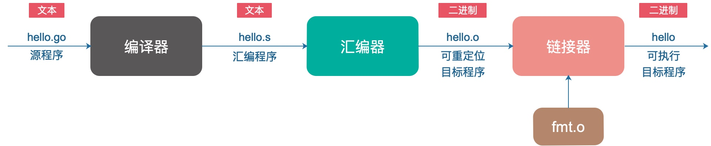
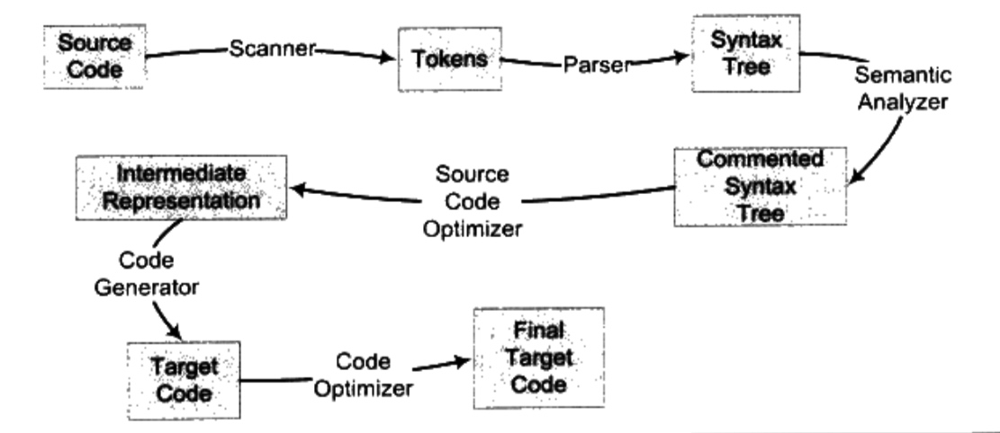

<!doctype html>
<html class="no-js" lang="en">
  <head>
    <meta charset="utf-8" />
    <meta name="viewport" content="width=device-width, initial-scale=1.0" />
    <title>
    
  Build System - 
  
  </title>
  
  
  <link href="atom.xml" rel="alternate" title="" type="application/atom+xml">
    <link rel="stylesheet" href="asset/css/foundation.min.css" />
    <link rel="stylesheet" href="asset/css/docs.css" />
    <script src="asset/js/vendor/modernizr.js"></script>
    <script src="asset/js/vendor/jquery.js"></script>
 
<script type="text/javascript">
  function before_search(){
    var searchVal = 'site: ' + document.getElementById('search_input').value;
    document.getElementById('search_q').value = searchVal;
    return true;
  }
</script>
  </head>
  <body class="antialiased hide-extras">
    
    <div class="marketing off-canvas-wrap" data-offcanvas>
      <div class="inner-wrap">


<nav class="top-bar docs-bar hide-for-small" data-topbar>


  <section class="top-bar-section">
  <div class="row">
      <div style="position: relative;width:100%;"><div style="position: absolute; width:100%;">
        <ul id="main-menu" class="left">
        
        <li id=""><a target="self" href="index.html">Home</a></li>
        
        <li id=""><a target="_self" href="archives.html">Archives</a></li>
        
        </ul>

        <ul class="right" id="search-wrap">
          <li>
<form target="_blank" onsubmit="return before_search();" action="https://google.com/search" method="get">
    <input type="hidden" id="search_q" name="q" value="" />
    <input tabindex="1" type="search" id="search_input"  placeholder="Search"/>
</form>
</li>
          </ul>
      </div></div>
  </div>
  </section>

</nav>

        <nav class="tab-bar show-for-small">
  <a href="javascript:void(0)" class="left-off-canvas-toggle menu-icon">
    <span> &nbsp; </span>
  </a>
</nav>

<aside class="left-off-canvas-menu">
      <ul class="off-canvas-list">
        
        <li><a target="self" href="index.html">Home</a></li>
        
        <li><a target="_self" href="archives.html">Archives</a></li>
        

    <li><label>Categories</label></li>

        
            <li><a href="vim.html">vim</a></li>
        
            <li><a href="code.html">code</a></li>
        
            <li><a href="thoughts.html">thoughts</a></li>
        
            <li><a href="java.html">java</a></li>
        
            <li><a href="machine%20learning.html">machine learning</a></li>
        
            <li><a href="network.html">network</a></li>
        
            <li><a href="code%20race.html">code race</a></li>
        
            <li><a href="database.html">database</a></li>
         

      </ul>
    </aside>

<a class="exit-off-canvas" href="#"></a>


        <section id="main-content" role="main" class="scroll-container">
        
       

 <script type="text/javascript">
  $(function(){
    $('#menu_item_index').addClass('is_active');
  });
</script>
<div class="row">
  <div class="large-8 medium-8 columns">
      <div class="markdown-body article-wrap">
       <div class="article">
          
          <h1>Build System</h1>
     
        <div class="read-more clearfix">
          <span class="date">2022/2/13</span>

          <span>posted in&nbsp;</span> 
          
              <span class="posted-in"><a href='code.html'>code</a></span>
           
         
          <span class="comments">
            

            
          </span>

        </div>
      </div><!-- article -->

      <div class="article-content">
      <p>构建系统(build system)是用来从源代码生成用户可以使用的目标(targets)的自动化工具。目标可以包括库、可执行文件、或者生成的脚本等等。</p>
<p>通常每个构建系统都有一个对应的构建文件，来指导构建系统如何编译、链接生成可执行程序等等。构建文件中通常描述了要生成的目标、生成目标所需要的源代码文件、依赖库等等内容。不同构建系统使用的构建文件的名称和内容格式规范通常各不相同。</p>
<h2><a id="%E5%B8%B8%E8%A7%81build-system" class="anchor" aria-hidden="true"><span class="octicon octicon-link"></span></a>常见Build System</h2>
<table>
<thead>
<tr>
<th>Build System</th>
<th>简介</th>
<th>构建文件</th>
<th style="text-align: left">支持系统</th>
<th style="text-align: left">支持语言</th>
</tr>
</thead>
<tbody>
<tr>
<td>GNU Make</td>
<td>类Unix操作系统下的构建系统</td>
<td>Makefile</td>
<td style="text-align: left">Linux</td>
<td style="text-align: left">各类语言，主要用于c/c++</td>
</tr>
<tr>
<td>NMake</td>
<td>Windows平台下的GNU Make</td>
<td>.mak</td>
<td style="text-align: left">Windows</td>
<td style="text-align: left">Visual Studio支持的各类语言</td>
</tr>
<tr>
<td>MSBuild</td>
<td>NMake替代品，Visual Studio从2013版本开始使用它作为构建系统。</td>
<td>.vcproj</td>
<td style="text-align: left">Windows</td>
<td style="text-align: left">Visual Studio支持的各类语言</td>
</tr>
<tr>
<td>Ninja</td>
<td>由Chrome团队开发，特点是构建快速。一般是通过cmake来生成ninja的配置，进而进行编译</td>
<td>.ninja</td>
<td style="text-align: left">Linux, Windows</td>
<td style="text-align: left">各类语言</td>
</tr>
<tr>
<td>Blade</td>
<td>由腾讯开发，以Ninja作为后端构建工具</td>
<td>Build文件</td>
<td style="text-align: left">Linux</td>
<td style="text-align: left">各类语言</td>
</tr>
<tr>
<td>CMake</td>
<td>不直接构建并生成目标，而是产生其他构建系统所需要的构建文件，然后再由它们来构建生成最终目标。</td>
<td>CMakeLists.txt</td>
<td style="text-align: left">跨平台</td>
<td style="text-align: left">各类语言</td>
</tr>
</tbody>
</table>
<h2><a id="go-build-system" class="anchor" aria-hidden="true"><span class="octicon octicon-link"></span></a>Go Build System</h2>
<p>在Golang中，build过程主要由go build执行。它完成了源码的编译与可执行文件的生成。<br />
go build接收参数为.go文件或目录，默认情况下编译当前目录下所有.go文件。在main包下执行会生成相应的可执行文件，在非main包下，它会做一些检查，生成的库文件放在缓存目录下，在工作目录下并无新文件生成。</p>
<h3><a id="%E7%BC%96%E8%AF%91%E8%BF%87%E7%A8%8B" class="anchor" aria-hidden="true"><span class="octicon octicon-link"></span></a>编译过程</h3>
<p></p>
<p>Go编译过程如上图所示，主要包含编译和汇编两个步骤:</p>
<ul>
<li>编译：
<ul>
<li>前端：词法分析、语法分析、语义分析-&gt;生成平台无关的中间代码</li>
<li>后端：对中间代码进行优化，得到目标平台的二进制文件</li>
</ul>
</li>
<li>链接：编译器生成的一个个目标文件链接成可执行文件。最终得到的文件是分成各种段的，比如数据段、代码段、BSS段等等，运行时会被装载到内存中。各个段具有不同的读写、执行属性，保护了程序的安全运行。</li>
</ul>
<p></p>
<h3><a id="go-mod%E4%BD%9C%E7%94%A8" class="anchor" aria-hidden="true"><span class="octicon octicon-link"></span></a>go.mod作用</h3>
<p>Go.mod是Golang1.11版本新引入的官方包管理工具用于解决之前没有地方记录依赖包具体版本的问题，方便依赖包的管理。</p>
<p>有了go.mod，在编译项目时可以找到指定版本的依赖包，从而完成整体项目的编译和链接。</p>
<h2><a id="%E5%8F%82%E8%80%83%E6%96%87%E6%A1%A3" class="anchor" aria-hidden="true"><span class="octicon octicon-link"></span></a>参考文档</h2>
<p><a href="https://juejin.cn/post/6844904015587704839">CMake学习笔记（一）基本概念介绍、入门教程及CLion安装配置</a><br />
<a href="https://ninja-build.org/manual.html">The Ninja build system</a><br />
<a href="https://juejin.cn/post/6844903994108690445">走进Golang之编译器原理</a><br />
<a href="https://qcrao91.gitbook.io/go/bian-yi-he-lian-jie/go-bian-yi-lian-jie-guo-cheng-gai-shu">Go 编译链接过程概述</a><br />
<a href="https://juejin.cn/post/6844903848314667022">GO笔记之详解GO的编译执行流程</a><br />
<a href="https://paper.seebug.org/1749/">劫持 Golang 编译</a></p>


    

      </div>

      <div class="row">
        <div class="large-6 columns">
        <p class="text-left" style="padding:15px 0px;">
      
        </p>
        </div>
        <div class="large-6 columns">
      <p class="text-right" style="padding:15px 0px;">
      
          <a  href="16445813243669.html" 
          title="Next Post: PU Learning (Learning from Positive and Unlabeled Example)">PU Learning (Learning from Positive and Unlabeled Example) &raquo;</a>
      
      </p>
        </div>
      </div>
      <div class="comments-wrap">
        <div class="share-comments">
          

          

          
        </div>
      </div>
    </div><!-- article-wrap -->
  </div><!-- large 8 -->


 <div class="large-4 medium-4 columns">
  <div class="hide-for-small">
    <div id="sidebar" class="sidebar">
          <div id="site-info" class="site-info">
            
                <div class="site-a-logo"></div>
            
                <h1></h1>
                <div class="site-des"></div>
                <div class="social">


<a target="_blank" class="email" href="mailto:669279048@qq.com" title="Email">Email</a>
  <a target="_blank" class="rss" href="atom.xml" title="RSS">RSS</a>
                
              	 </div>
          	</div>

             

              <div id="site-categories" class="side-item ">
                <div class="side-header">
                  <h2>Categories</h2>
                </div>
                <div class="side-content">

      	<p class="cat-list">
        
            <a href="vim.html"><strong>vim</strong></a>
        
            <a href="code.html"><strong>code</strong></a>
        
            <a href="thoughts.html"><strong>thoughts</strong></a>
        
            <a href="java.html"><strong>java</strong></a>
        
            <a href="machine%20learning.html"><strong>machine learning</strong></a>
        
            <a href="network.html"><strong>network</strong></a>
        
            <a href="code%20race.html"><strong>code race</strong></a>
        
            <a href="database.html"><strong>database</strong></a>
         
        </p>


                </div>
              </div>

              <div id="site-categories" class="side-item">
                <div class="side-header">
                  <h2>Recent Posts</h2>
                </div>
                <div class="side-content">
                <ul class="posts-list">
	      
		      
			      <li class="post">
			        <a href="16447339815718.html">Build System</a>
			      </li>
		     
		  
		      
			      <li class="post">
			        <a href="16445813243669.html">PU Learning (Learning from Positive and Unlabeled Example)</a>
			      </li>
		     
		  
		      
			      <li class="post">
			        <a href="15938652486267.html">Vim开发环境搭建</a>
			      </li>
		     
		  
		      
			      <li class="post">
			        <a href="15848628637136.html">阿里云深度学习环境搭建</a>
			      </li>
		     
		  
		      
			      <li class="post">
			        <a href="15837602816287.html">图片超分辨神经网络：Super-Resolution Convolutional Neural Network(SRCNN)</a>
			      </li>
		     
		  
		      
		  
		      
		  
		      
		  
		      
		  
		      
		  
		      
		  
		      
		  
		      
		  
		      
		  
		      
		  
		      
		  
		      
		  
		      
		  
		      
		  
		      
		   
		  		</ul>
                </div>
              </div>
        </div><!-- sidebar -->
      </div><!-- hide for small -->
</div><!-- large 4 -->

</div><!-- row -->

 <div class="page-bottom clearfix">
  <div class="row">
   <p class="copyright">Copyright &copy; 2015
Powered by <a target="_blank" href="http://www.mweb.im">MWeb</a>,&nbsp; 
Theme used <a target="_blank" href="http://github.com">GitHub CSS</a>.</p>
  </div>
</div>

        </section>
      </div>
    </div>


  


<style type="text/css">
figure{margin: 0;padding: 0;}
figcaption{text-align:center;}

/* PrismJS 1.14.0
 http://prismjs.com/download.html#themes=prism&languages=markup+css+clike+javascript */
/**
 * prism.js default theme for JavaScript, CSS and HTML
 * Based on dabblet (http://dabblet.com)
 * @author Lea Verou
 */

code[class*="language-"],
pre[class*="language-"] {
    color: black;
    background: none;
    text-shadow: 0 1px white;
    font-family: Consolas, Monaco, 'Andale Mono', 'Ubuntu Mono', monospace;
    text-align: left;
    white-space: pre;
    word-spacing: normal;
    word-break: normal;
    word-wrap: normal;
    line-height: 1.5;
    
    -moz-tab-size: 4;
    -o-tab-size: 4;
    tab-size: 4;
    
    -webkit-hyphens: none;
    -moz-hyphens: none;
    -ms-hyphens: none;
    hyphens: none;
}

pre[class*="language-"]::-moz-selection, pre[class*="language-"] ::-moz-selection,
code[class*="language-"]::-moz-selection, code[class*="language-"] ::-moz-selection {
    text-shadow: none;
    background:#b3d4fc;
}

pre[class*="language-"]::selection, pre[class*="language-"] ::selection,
code[class*="language-"]::selection, code[class*="language-"] ::selection {
    text-shadow: none;
    background: #b3d4fc;
}

@media print {
    code[class*="language-"],
    pre[class*="language-"] {
        text-shadow: none;
    }
}

/* Code blocks */
pre[class*="language-"] {
    padding: 1em;
    margin: .5em 0;
    overflow: auto;
}

:not(pre) > code[class*="language-"],
pre[class*="language-"] {
    background: #F7F7F7;
}

/* Inline code */
:not(pre) > code[class*="language-"] {
    padding: .1em;
    border-radius: .3em;
    white-space: normal;
}

.token.comment,
.token.prolog,
.token.doctype,
.token.cdata {
    color: slategray;
}

.token.punctuation {
    color: #999;
}

.namespace {
    opacity: .7;
}

.token.property,
.token.tag,
.token.boolean,
.token.number,
.token.constant,
.token.symbol,
.token.deleted {
    color: #905;
}

.token.selector,
.token.attr-name,
.token.string,
.token.char,
.token.builtin,
.token.inserted {
    color: #690;
}

.token.operator,
.token.entity,
.token.url,
.language-css .token.string,
.style .token.string {
    color: #9a6e3a;
    background: hsla(0, 0%, 100%, .5);
}

.token.atrule,
.token.attr-value,
.token.keyword {
    color: #07a;
}

.token.function,
.token.class-name {
    color: #DD4A68;
}

.token.regex,
.token.important,
.token.variable {
    color: #e90;
}

.token.important,
.token.bold {
    font-weight: bold;
}
.token.italic {
    font-style: italic;
}

.token.entity {
    cursor: help;
}


pre[class*="language-"].line-numbers {
    position: relative;
    padding-left: 3.8em;
    counter-reset: linenumber;
}

pre[class*="language-"].line-numbers > code {
    position: relative;
    white-space: inherit;
}

.line-numbers .line-numbers-rows {
    position: absolute;
    pointer-events: none;
    top: 0;
    font-size: 100%;
    left: -3.8em;
    width: 3em; /* works for line-numbers below 1000 lines */
    letter-spacing: -1px;
    border-right: 1px solid #999;

    -webkit-user-select: none;
    -moz-user-select: none;
    -ms-user-select: none;
    user-select: none;

}

    .line-numbers-rows > span {
        pointer-events: none;
        display: block;
        counter-increment: linenumber;
    }

        .line-numbers-rows > span:before {
            content: counter(linenumber);
            color: #999;
            display: block;
            padding-right: 0.8em;
            text-align: right;
        }

</style>

  
    

    <script src="asset/js/foundation.min.js"></script>
    <script>
      $(document).foundation();
      function fixSidebarHeight(){
        var w1 = $('.markdown-body').height();
          var w2 = $('#sidebar').height();
          if (w1 > w2) { $('#sidebar').height(w1); };
      }
      $(function(){
        fixSidebarHeight();
      })
      $(window).load(function(){
          fixSidebarHeight();
      });
     
    </script>


  </body>
</html>
